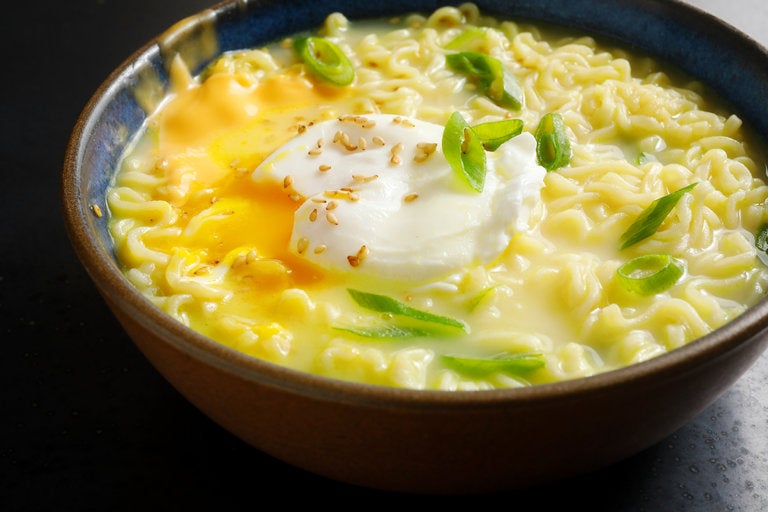

Perfect Ramen

Easy to cook, looks delicious and fills you up. Sign me up. Ramen is one of my favorite foods and the best thing is you can keep adding onto it if you get bored. Lets begin.
Ingredients
- 1 pack of ramen noodles(with flavor pack)
- 1/2 tsp of butter
- 2 slices of cheese
- 1/2 tsp of sesame seeds
- 1/2 scallion, green part only
- 2 eggs
Where to begin
- Boil 2 1/2 cups of water in a small pan, add noodles and cook for 2 minutes
- Add the flavor packet and stir for 30 seconds
- Remove the pan from heat and carefully add the eggs. Don't stir, pull the noodles over the egg and let sit for 1 minute to poach
- Transfer everything to a new bowl
- Add your ingredients and garnish with your scallions
- Bon appetit